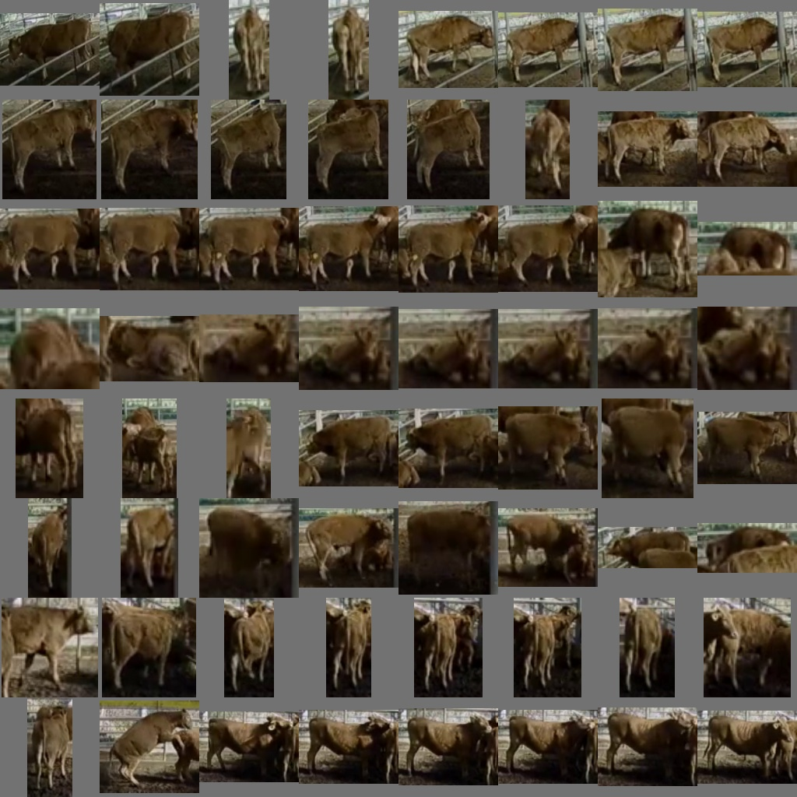

ReID 학습과 고정 개체군 ID 유지
레슨 07의 정합은 “잠깐 끊긴” 소를 잇는 데는 강하지만, 22분짜리 cow03 처럼 소들이 모였다 흩어지기를 반복하면 ID 가 29개(실제 약 15마리)로 남았습니다. 이 레슨에서는 두 가지를 더합니다. ① 소 한 마리 한 마리를 외형으로 구별하는 ReID(재식별) 모델을 사람 라벨 없이 학습하고, ② “축사의 마릿수는 고정”이라는 조건을 이용해 모든 tracklet 을 정확히 N 개의 개체에 배정합니다.
YOLO 검출 → BoT-SORT 추적 → 1차 정합(짧은 끊김, 레슨 07)
→ ReID 임베딩 추출 (4프레임마다, 소 crop → 256차원 벡터)
→ ① ID 스왑 분리 : 다른 소와 겹친 직후 외형이 바뀌면 tracklet 을 자름
→ ② 마릿수 N 추정 : 동시 검출 수
→ ③ 고정 N 슬롯 배정: 시간 겹침 금지 + 외형 + 움직임 비용, 긴 tracklet 부터 탐욕 배정 → 반복 개선(ICM)
→ ID 1..N1. ReID 학습 데이터: 추적 결과가 곧 라벨
사람이 소마다 이름을 붙이지 않아도, 추적 결과에는 두 가지 확실한 정보가 들어 있습니다.
- 같은 tracklet 안의 crop → 같은 소 (positive)
- 같은 순간에 화면에 함께 있는 다른 tracklet → 반드시 다른 소 (negative). 한 소가 동시에 두 곳에 있을 수는 없으니까요.
짧은 영상(1~2분)은 정합 후 ID 가 거의 마릿수와 같으므로 최종 ID 를 라벨로, 긴 영상(cow03)은 정합 전 tracklet 을 라벨로 씁니다. 같은 소가 여러 tracklet 으로 쪼개져 있을 수 있기 때문에, 긴 영상에서는 임의 시각 t 에 동시에 존재하는 tracklet 끼리만 한 배치에 넣습니다. 또 다른 영상의 같은 소가 negative 로 들어가지 않도록 한 배치는 한 영상에서만 뽑습니다.
깨끗한 crop 만 사용합니다: 신뢰도 ≥ 0.5, 보간 프레임 제외, 다른 소와의 IoU < 0.15, 높이 ≥ 24px. 결과는 10개 영상에서 약 2만 4천 장입니다.

"""ReID 학습 데이터 생성: 추적 결과를 '자기지도 라벨'로 사용해 소 crop 을 모은다.
라벨 원리 (사람 라벨링 없음)
- 같은 tracklet(또는 정합된 ID) 안의 crop → 같은 소 (positive)
- 같은 시각에 동시에 존재하는 다른 tracklet → 반드시 다른 소 (negative)
mode "id" : 짧은 영상 → 오프라인 정합 결과(tracks_activity.csv)의 최종 ID 를 라벨로 사용
mode "tracklet" : 긴 영상 → 정합 전 tracklet(tracks_raw.csv) 을 라벨로 사용 (같은 소가 여러 tracklet 일 수 있으므로
학습 시 '동시에 존재하는 tracklet 끼리만' 비교)
깨끗한 crop 만 사용: conf ≥ 0.5, 보간 프레임 제외, 다른 소와 IoU < 0.15 (겹침 없음), 높이 ≥ 24px
사용: python scripts/prepare_reid.py E:/Video/cow
출력: data/reid/<영상>.npz (imgs uint8 N×128×128×3, label, frame, mode)
"""
import argparse
import sys
from pathlib import Path
import cv2
import numpy as np
import pandas as pd
sys.path.insert(0, str(Path(__file__).resolve().parent.parent))
from hanwoo.config import DATA_DIR, OUTPUT_DIR # noqa: E402
from hanwoo.reid import CROP, crop_box, max_iou_others # noqa: E402
def load_labels(name: str, long_video: bool, min_tracklet_s: float, fps: float):
if long_video:
df = pd.read_csv(OUTPUT_DIR / name / "tracks_raw.csv")
n = df.groupby("tid").frame.transform("count")
df = df[n >= min_tracklet_s * fps].copy()
mode = "tracklet"
else:
df = pd.read_csv(OUTPUT_DIR / name / "tracks_activity.csv")
df = df[df.interp == 0].copy()
mode = "id"
return df[["frame", "tid", "x1", "y1", "x2", "y2", "conf"]].reset_index(drop=True), mode
def main():
ap = argparse.ArgumentParser()
ap.add_argument("videos", help="영상 폴더")
ap.add_argument("--out", default=str(DATA_DIR / "reid"))
ap.add_argument("--long-s", type=float, default=300, help="이 길이(초) 이상이면 tracklet 모드")
ap.add_argument("--crops-per-s", type=float, default=4, help="ID 당 초당 crop 수 (짧은 영상)")
a = ap.parse_args()
out = Path(a.out)
out.mkdir(parents=True, exist_ok=True)
for vp in sorted(Path(a.videos).glob("*.mp4")):
name = vp.stem
cap = cv2.VideoCapture(str(vp))
fps = cap.get(cv2.CAP_PROP_FPS) or 24.0
dur = cap.get(cv2.CAP_PROP_FRAME_COUNT) / fps
long_video = dur >= a.long_s
df, mode = load_labels(name, long_video, 5.0, fps)
# 긴 영상은 1초당 1장, 짧은 영상은 crops_per_s 장
every = int(round(fps)) if long_video else max(1, int(round(fps / a.crops_per_s)))
if dur > 100 and not long_video:
every *= 2
df = df[df.frame % every == 0].reset_index(drop=True)
df["occ"] = max_iou_others(df)
df = df[(df.conf >= 0.5) & (df.occ < 0.15) & ((df.y2 - df.y1) >= 24)].reset_index(drop=True)
by_frame = df.groupby("frame").indices
imgs = np.zeros((len(df), CROP, CROP, 3), np.uint8)
last = df.frame.max()
fi = 0
while fi <= last:
if fi in by_frame:
ok, frame = cap.read()
if not ok:
break
for i in by_frame[fi]:
r = df.iloc[i]
imgs[i] = crop_box(frame, (r.x1, r.y1, r.x2, r.y2))
elif not cap.grab():
break
fi += 1
cap.release()
np.savez(out / f"{name}.npz", imgs=imgs, label=df.tid.to_numpy(np.int32),
frame=df.frame.to_numpy(np.int32), mode=mode, fps=fps)
print(f"{name}: {mode:8s} every {every:2d}f crops {len(df):6d} ids {df.tid.nunique()}")
# 미리보기 그리드 (강좌용): ID 별 crop 6장
S = np.load(out / "cow04.npz")
rows = []
for lab in np.unique(S["label"])[:8]:
idx = np.where(S["label"] == lab)[0]
pick = idx[np.linspace(0, len(idx) - 1, 8).astype(int)]
rows.append(np.hstack([S["imgs"][i] for i in pick]))
cv2.imwrite(str(out / "preview_cow04.jpg"), np.vstack(rows))
if __name__ == "__main__":
main()2. 모델과 손실 함수
- 백본: ImageNet 사전학습 ResNet50, 마지막 stride 를 1로 바꿔 작은 소 crop(128px)에서도 8×8 특징맵 유지
- 헤드: GAP → BatchNorm → Linear(256) → L2 정규화 → 코사인 유사도로 비교
- 배치: P×K 샘플링 (P=12 마리 × K=4 장)
- 손실: Supervised Contrastive(온도 0.1) + Batch-hard Triplet(margin 0.3)
- 증강: 좌우반전, 약한 스케일·이동, 밝기·대비, random erasing(펜스 가림 모사). 색상(hue)은 바꾸지 않습니다. 털색 농도는 개체를 구분하는 단서이기 때문입니다.
"""한우 재식별(ReID) 모델: 소 crop → 256차원 L2 정규화 임베딩.
- 백본: ImageNet 사전학습 ResNet50, 마지막 stride 1 (작은 소 crop 에서 공간 해상도 유지)
- 헤드: GAP → BN → Linear(256) → L2 정규화
- 학습: scripts/train_reid.py (추적 결과를 '자기지도' 라벨로 사용, Supervised-Contrastive loss)
"""
from __future__ import annotations
from pathlib import Path
import cv2
import numpy as np
import pandas as pd
import torch
import torch.nn as nn
import torch.nn.functional as F
CROP = 128 # 입력 크기 (정사각 letterbox)
MEAN = np.array([0.485, 0.456, 0.406], np.float32)
STD = np.array([0.229, 0.224, 0.225], np.float32)
class CowReID(nn.Module):
def __init__(self, dim: int = 256, pretrained: bool = True):
super().__init__()
import torchvision
w = torchvision.models.ResNet50_Weights.IMAGENET1K_V2 if pretrained else None
r = torchvision.models.resnet50(weights=w)
# last stride 1 (BoT trick): 128px 입력에서 4x4 → 8x8 특징맵
r.layer4[0].conv2.stride = (1, 1)
r.layer4[0].downsample[0].stride = (1, 1)
self.backbone = nn.Sequential(*list(r.children())[:-2])
self.bn = nn.BatchNorm1d(2048)
self.fc = nn.Linear(2048, dim)
def forward(self, x):
f = self.backbone(x)
f = F.adaptive_avg_pool2d(f, 1).flatten(1)
return F.normalize(self.fc(self.bn(f)), dim=1)
# --------------------------------------------------------------------------- crop
def crop_box(frame: np.ndarray, box, size: int = CROP, pad: float = 0.08) -> np.ndarray:
"""bbox 를 약간 넓혀 자른 뒤 비율을 유지한 채 size×size 회색 캔버스에 배치 (letterbox)."""
H, W = frame.shape[:2]
x1, y1, x2, y2 = box
w, h = x2 - x1, y2 - y1
x1, x2 = int(max(0, x1 - pad * w)), int(min(W, x2 + pad * w))
y1, y2 = int(max(0, y1 - pad * h)), int(min(H, y2 + pad * h))# --------------------------------------------------------------------------- 데이터
class Video:
def __init__(self, path: Path):
z = np.load(path)
self.name = path.stem
self.imgs, self.label, self.frame = z["imgs"], z["label"], z["frame"]
self.mode = str(z["mode"])
self.ids = np.unique(self.label)
self.idx = {l: np.where(self.label == l)[0] for l in self.ids}
self.ids = np.array([l for l in self.ids if len(self.idx[l]) >= 4])
self.span = {l: (self.frame[self.idx[l]].min(), self.frame[self.idx[l]].max()) for l in self.ids}
def sample(self, rng, P, K):
if self.mode == "tracklet":
t = rng.integers(self.frame.min(), self.frame.max() + 1)
alive = [l for l in self.ids if self.span[l][0] <= t <= self.span[l][1]]
cand = np.array(alive) if len(alive) >= 4 else self.ids
else:
cand = self.ids
ids = rng.choice(cand, size=min(P, len(cand)), replace=False)
sel, lab = [], []
for l in ids:
sel += list(rng.choice(self.idx[l], size=K, replace=len(self.idx[l]) < K))
lab += [l] * K
return self.imgs[sel], np.array(lab)
def augment(imgs: np.ndarray, rng) -> np.ndarray:
out = np.empty_like(imgs)
for i, im in enumerate(imgs):
if rng.random() < 0.5:
im = im[:, ::-1]
# 약한 스케일·이동
s = rng.uniform(0.85, 1.1)
tx, ty = rng.uniform(-0.08, 0.08, 2) * CROP
M = np.array([[s, 0, (1 - s) * CROP / 2 + tx], [0, s, (1 - s) * CROP / 2 + ty]], np.float32)
im = cv2.warpAffine(np.ascontiguousarray(im), M, (CROP, CROP), borderValue=(114, 114, 114))
# 밝기·대비 (색상(hue)은 개체 단서이므로 바꾸지 않음)
a, b = rng.uniform(0.75, 1.25), rng.uniform(-20, 20)
im = np.clip(im.astype(np.float32) * a + b, 0, 255).astype(np.uint8)
# random erasing: 펜스·다른 소에 의한 가림 모사
if rng.random() < 0.5:
eh, ew = int(CROP * rng.uniform(0.15, 0.4)), int(CROP * rng.uniform(0.15, 0.4))
y, x = rng.integers(0, CROP - eh), rng.integers(0, CROP - ew)
im[y:y + eh, x:x + ew] = rng.integers(0, 255, 3)
out[i] = im
return out
# --------------------------------------------------------------------------- 손실
def supcon(z, y, temp=0.1):
sim = z @ z.T / temp
n = len(y)
eye = torch.eye(n, device=z.device, dtype=torch.bool)
sim = sim.masked_fill(eye, -1e4)
pos = (y[:, None] == y[None, :]) & ~eye
logp = sim - torch.logsumexp(sim, dim=1, keepdim=True)
return -(logp * pos).sum(1).div(pos.sum(1).clamp(min=1)).mean()
def triplet_hard(z, y, margin=0.3):
d = torch.cdist(z, z)
same = y[:, None] == y[None, :]
hp = (d * same).max(1).values
hn = d.masked_fill(same, 1e4).min(1).values
return F.relu(hp - hn + margin).mean()
3. 학습과 평가
python scripts/prepare_reid.py E:/Video/cow
python scripts/train_reid.py --iters 3000 # cow02, cow09 는 검증용으로 제외평가 방법: 검증 영상에서 각 소의 앞 절반 평균 임베딩을 갤러리로 두고, 뒤 절반의 2초 구간마다 “같은 영상의 10~12마리 중 누구인가” 를 맞힌 비율(Rank-1)을 잽니다.
| 외형 특징 | cow02 (12마리) | cow09 (10마리) |
|---|---|---|
| HSV 색 히스토그램 (레슨 07) | 0.605 | 0.575 |
| ImageNet ResNet50 (학습 없음) | 0.617 | 0.625 |
| ReID v1 — 전체 학습률 3e-4 | 0.574 | 0.783 |
| ReID v2 — 백본 5e-5 / 헤드 1e-3 (채택) | 0.637 | 0.783 |
4. 고정 개체군 ID 배정 알고리즘
① ID 스왑 분리
온라인 추적기는 두 소가 겹칠 때 ID 를 바꿔 다는 경우가 있습니다(스왑). 다른 소와 겹친(IoU ≥ 0.2) 순간마다 앞 4초와 뒤 4초의 평균 임베딩을 비교해, 코사인 유사도가 0.55 미만이면 그 지점에서 tracklet 을 자릅니다.
| 임계값 0.55 보정 결과 | cow02 | cow09 |
|---|---|---|
| 같은 소의 연속 4초 구간을 잘못 자르는 비율 | 0.0% | 1.0% |
| 다른 소로 바뀐 구간을 잡아내는 비율 | 81% | 99% |
② 마릿수 N 추정
신뢰도 0.4 이상 검출이 동시에 N 개 이상인 프레임이 전체의 1% 이상인 가장 큰 N. cow03 에서는 15입니다. 마릿수를 알고 있다면 --herd-size 15 로 지정하세요.
③ N 개 슬롯 배정 (제약 있는 군집화)
- 제약: 한 소는 같은 시각에 두 곳에 있을 수 없음 → 시간이 0.5초 넘게 겹치는 tracklet 은 같은 슬롯 불가
- 움직임 게이트: 슬롯의 직전 tracklet 끝 위치 → 새 tracklet 시작 위치까지 거리가
(2 + 0.5×공백초) × 1.5몸길이를 넘으면 불가 - 비용 = 0.7 × 외형거리(1 − 코사인; 시간상 이웃 tracklet 과 슬롯 전체 평균) + 0.3 × 움직임 비용 + 0.05 × 공백 비용
- 탐욕 배정: 긴(=신뢰도 높은) tracklet 부터 가장 싼 슬롯에. 들어갈 슬롯이 없거나 비용이 0.45 보다 나쁘고 슬롯이 N 개 미만이면 새 슬롯
- 반복 개선(ICM): 짧은 tracklet 부터 하나씩 빼서 “나머지 배정은 고정” 한 상태의 최적 슬롯으로 옮기기를 변화가 없을 때까지 반복
- N 개 슬롯 어디에도 넣을 수 없는 tracklet(동시 검출이 N 초과: 한 소에 박스 2개, 오검출)은 제외하고 비율을 보고합니다(cow03: 검출의 3%)
"""3단계(고정 개체군): 축사 소 마릿수 N 이 고정되어 있다는 조건을 이용한 ID 유지.
온라인 추적 + 짧은 끊김 정합 뒤에도 남는 tracklet 들을, 정확히 N 개의 '개체 슬롯' 에 배정한다.
제약 : 한 개체는 같은 시각에 두 곳에 있을 수 없다 → 시간이 겹치는 tracklet 은 같은 ID 불가
비용 : 외형(ReID 임베딩 코사인 거리) + 움직임(이전/다음 위치에서 공백 시간 동안 이동 가능한 거리인가)
절차 :
1) ID 스왑 분리 — 한 tracklet 안에서 다른 소와 겹친 직후 외형 임베딩이 급변하면 그 지점에서 자른다
2) 마릿수 N 추정 — 동시 검출 수가 N 이상인 프레임이 1% 이상인 최대 N (또는 사용자 지정)
3) 탐욕 배정 — 긴(신뢰도 높은) tracklet 부터, 시간이 겹치지 않는 개체 슬롯 중 최소 비용 슬롯에 배정
(어느 슬롯에도 못 들어가고 슬롯 수 < N 이면 새 개체)
4) 반복 개선(ICM) — 짧은 tracklet 부터 하나씩 빼서 '현재 나머지 배정' 기준 최적 슬롯으로 재배정, 수렴까지
N 개 슬롯 어디에도 넣을 수 없는 tracklet(동시 검출이 N 초과: 중복 박스·오검출)은 제외하고 비율을 보고한다.
"""
from __future__ import annotations
import numpy as np
import pandas as pd
from .config import PipelineConfig
from .stitching import body_px
# --------------------------------------------------------------------------- 임베딩 결합
def attach_embeddings(df: pd.DataFrame, emb_df: pd.DataFrame, emb: np.ndarray):
"""df(frame, tid, rtid) 의 각 tracklet 에 ReID 임베딩 시계열을 붙인다.
emb_df: frame, tid(=추적기 원본 id), conf, occ / emb: 같은 순서의 임베딩
반환: {tid: dict(frame, emb, w)} (w = 품질 가중치: 겹침이 큰 crop 은 0)
"""
e = emb_df.rename(columns={"tid": "rtid"}).reset_index().rename(columns={"index": "row"})
m = df[["frame", "rtid", "tid"]].merge(e, on=["frame", "rtid"], how="inner")
out = {}
for tid, g in m.groupby("tid"):
g = g.sort_values("frame")
w = np.where(g.occ.to_numpy() < 0.3, g.conf.to_numpy(), 0.0)
out[tid] = dict(frame=g.frame.to_numpy(), emb=emb[g.row.to_numpy()], w=w, occ=g.occ.to_numpy())
return out
def _mean_emb(E, w=None):
if len(E) == 0:
return None
w = np.ones(len(E)) if w is None else w
if w.sum() <= 0:
w = np.ones(len(E))
v = (E * w[:, None]).sum(0)
n = np.linalg.norm(v)
return v / n if n > 0 else None
# --------------------------------------------------------------------------- 1) 스왑 분리
def split_swaps(df: pd.DataFrame, embs: dict, fps: float, cfg: PipelineConfig):
"""다른 소와 겹친(occ≥0.2) 순간 전후 window 초의 평균 임베딩이 다르면 tracklet 을 분리."""
W = int(cfg.split_window_s * fps)
df = df.copy()
next_id = int(df.tid.max()) + 1
log = []
queue = list(embs)
while queue:
tid = queue.pop()
d = embs.get(tid)
if d is None or len(d["frame"]) < 8:
continue
fr, E, w, occ = d["frame"], d["emb"], d["w"], d["occ"]
best, best_sim = None, 1.0
for i in np.where(occ >= 0.2)[0]:
t = fr[i]
b = (fr >= t - W) & (fr < t) & (w > 0)
a = (fr > t) & (fr <= t + W) & (w > 0)
if b.sum() < 3 or a.sum() < 3 or t - fr[0] < W // 2 or fr[-1] - t < W // 2:
continue
sim = float(_mean_emb(E[b], w[b]) @ _mean_emb(E[a], w[a]))
if sim < best_sim:
best, best_sim = t, sim
if best is None or best_sim >= cfg.split_sim_thr:
continue
# 분리: best 이후 프레임에 새 id 부여
m = (df.tid == tid) & (df.frame > best)
df.loc[m, "tid"] = next_id
k = fr > best
embs[next_id] = {key: v[k] for key, v in d.items()}
embs[tid] = {key: v[~k] for key, v in d.items()}
log.append(dict(tid=int(tid), new=next_id, frame=int(best), sim=round(best_sim, 3)))
queue += [tid, next_id]
next_id += 1
return df, embs, log
# --------------------------------------------------------------------------- 2) 마릿수 추정
def estimate_herd_size(raw: pd.DataFrame, n_frames: int, min_frac: float = 0.01, conf: float = 0.4) -> int:
cnt = raw[raw.conf >= conf].groupby("frame").size().reindex(range(n_frames), fill_value=0).to_numpy()
for k in range(int(cnt.max()), 0, -1):
if (cnt >= k).mean() >= min_frac:
return k
return int(cnt.max())
# --------------------------------------------------------------------------- 3,4) 배정
class _Slot:
def __init__(self):
self.members: list[int] = []
def intervals(self, T, exclude=None):
return [(T[m]["start"], T[m]["end"], m) for m in self.members if m != exclude]
def _summaries(df, embs):
T = {}
for tid, g in df.groupby("tid"):
g = g.sort_values("frame")
cx = ((g.x1 + g.x2) / 2).to_numpy(); cy = ((g.y1 + g.y2) / 2).to_numpy()
k = min(5, len(g))
d = embs.get(tid)
e = _mean_emb(d["emb"], d["w"]) if d is not None and len(d["frame"]) else None
T[tid] = dict(start=int(g.frame.iloc[0]), end=int(g.frame.iloc[-1]), n=len(g),
p_start=np.array([np.median(cx[:k]), np.median(cy[:k])]),
p_end=np.array([np.median(cx[-k:]), np.median(cy[-k:])]),
emb=e, n_emb=0 if d is None else int((d["w"] > 0).sum()))
return T
def _slot_proto(slot, T, exclude=None):
es = [(T[m]["emb"], max(T[m]["n_emb"], 1)) for m in slot.members if m != exclude and T[m]["emb"] is not None]
if not es:
return None
return _mean_emb(np.stack([e for e, _ in es]), np.array([n for _, n in es], float))
def _cost(t, slot, T, fps, persp, cfg, tol, exclude=None):
"""tracklet t 를 slot 에 넣는 비용. 불가능하면 None."""
s = T[t]
prev = nxt = None
for a, b, m in slot.intervals(T, exclude):
if a <= s["end"] - tol and b >= s["start"] + tol: # 시간 겹침 → 불가
return None
if b < s["start"] + tol and (prev is None or b > T[prev]["end"]):
prev = m
if a > s["end"] - tol and (nxt is None or a < T[nxt]["start"]):
nxt = m
# 움직임 비용: 이전 끝 → t 시작, t 끝 → 다음 시작
c_mot, n_mot, gaps = 0.0, 0, []
for p, q in ((prev, t), (t, nxt)):
if p is None or q is None:
continue
gap_s = max(T[q]["start"] - T[p]["end"], 0) / fps
pa, pb = T[p]["p_end"], T[q]["p_start"]
d_bl = np.linalg.norm(pa - pb) / body_px((pa[1] + pb[1]) / 2, persp)
allowed = cfg.id_radius_bl + cfg.id_speed_bl_s * gap_s
if d_bl > cfg.id_gate * allowed:
return None
c_mot += min(d_bl / allowed, cfg.id_gate); n_mot += 1
gaps.append(gap_s)
c_mot = c_mot / n_mot if n_mot else 0.5
# 외형 비용: 시간상 이웃 tracklet(국소) + 슬롯 전체 평균(전역)
if s["emb"] is None:
c_app = 0.5
else:
loc = [T[m]["emb"] for m in (prev, nxt) if m is not None and T[m]["emb"] is not None]
glob = _slot_proto(slot, T, exclude=t if exclude is None else exclude)
sims = []
if loc:
sims.append(max(float(s["emb"] @ e) for e in loc))
if glob is not None:
sims.append(float(s["emb"] @ glob))
c_app = 1 - np.mean(sims) if sims else 0.5
c_gap = min(min(gaps) / 600, 1) if gaps else 0.5
return cfg.id_app_weight * c_app + (1 - cfg.id_app_weight) * c_mot + 0.05 * c_gap
def assign_identities(df: pd.DataFrame, embs: dict, fps: float, persp, n_herd: int, cfg: PipelineConfig):
T = _summaries(df, embs)
tol = int(cfg.id_overlap_tol_s * fps)
order = sorted(T, key=lambda t: -T[t]["n"])
slots: list[_Slot] = []
where: dict[int, int] = {}
def best_slot(t, exclude=None):
best, bc = None, np.inf
for k, sl in enumerate(slots):
c = _cost(t, sl, T, fps, persp, cfg, tol, exclude)
if c is not None and c < bc:
best, bc = k, c
return best, bc
# 3) 탐욕 배정 (긴 tracklet 부터)
for t in order:
k, c = best_slot(t)
if k is not None and (c < cfg.id_new_cost or len(slots) >= n_herd):
slots[k].members.append(t); where[t] = k
elif len(slots) < n_herd:
slots.append(_Slot()); slots[-1].members.append(t); where[t] = len(slots) - 1
# else: 미배정 (N 초과 동시 검출)
# 4) ICM 반복 개선 (짧은 tracklet 부터 재배정)
moves_log = []
for it in range(cfg.id_refine_iters):
moves = 0
for t in sorted(T, key=lambda t: T[t]["n"]):
cur = where.get(t)
if cur is not None:
slots[cur].members.remove(t)
k, c = best_slot(t)
if k is None:
if cur is not None: # 원래 자리로
slots[cur].members.append(t)
continue
slots[k].members.append(t); where[t] = k
if k != cur:
moves += 1
moves_log.append(moves)
if moves == 0:
break
# 결과: tid → 개체 슬롯 번호
out = df[df.tid.isin(where)].copy()
out["tid"] = out.tid.map(lambda t: where[t] + 1000) # relabel 단계에서 1..N 으로 재부여
# 허용 오차(tol) 안의 겹침 프레임 → 신뢰도 높은 쪽만 남김
out = out.sort_values("conf", ascending=False).drop_duplicates(["frame", "tid"]).sort_values(["frame", "tid"])
n_un = int(df.tid.isin(set(T) - set(where)).sum())
stats = dict(herd_size=int(n_herd), slots=len(slots), tracklets=len(T), unassigned_tracklets=len(T) - len(where),
unassigned_det_ratio=round(n_un / max(len(df), 1), 4), icm_moves=moves_log)
return out.reset_index(drop=True), stats, {int(t): int(k) for t, k in where.items()} # ---- 고정 개체군 ID 배정 (ReID + 마릿수 제약) ----
reid_weights: str = str(MODELS_DIR / "hanwoo_reid.pt") # 없으면 기존 2단계 정합만 사용
use_identity: bool = True
herd_size: int = 0 # 축사 마릿수 N (0 = 동시 검출 수로 자동 추정)
reid_every: int = 4 # ReID 임베딩 추출 간격(프레임)
split_window_s: float = 4.0 # 스왑 검사: 겹침 전후 비교 구간(초)
split_sim_thr: float = 0.55 # 전후 평균 임베딩 코사인 유사도가 이보다 낮으면 분리
id_radius_bl: float = 2.0 # 움직임 게이트: 기본 반경(몸길이)
id_speed_bl_s: float = 0.5 # 움직임 게이트: 공백 1초당 추가 이동 가능 거리(몸길이)
id_gate: float = 1.5 # 허용거리 × gate 초과 시 배정 불가
id_app_weight: float = 0.7 # 비용 중 외형 비중
id_new_cost: float = 0.45 # 슬롯 수 < N 일 때, 이 비용보다 나쁘면 새 개체로 시작
id_overlap_tol_s: float = 0.5 # tracklet 경계 겹침 허용(초)
id_refine_iters: int = 55. cow03 결과: 29 → 15 ID
ID 콘택트 시트: 한 행이 한 ID, 열은 영상 전체를 12구간으로 나눈 시각입니다. 한 행이 처음부터 끝까지 같은 소로 보이면 ID 가 유지된 것이고, 빈칸은 그 ID 가 보이지 않던 구간입니다.


6. 사용법
# ReID 모델(models/hanwoo_reid.pt)이 있으면 자동으로 고정 개체군 배정 사용
python run_activity.py E:/Video/cow/cow03.mp4
python run_activity.py E:/Video/cow --reuse --herd-size 15 # 마릿수 지정, 검출·임베딩 캐시 재사용
python scripts/identity_sheet.py outputs/cow03 # ID 콘택트 시트 생성